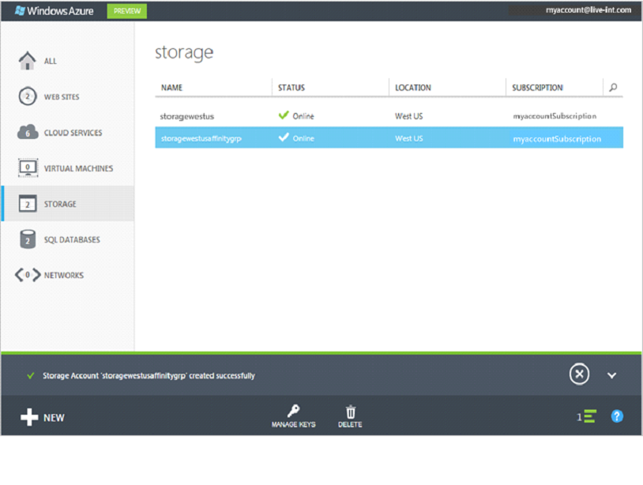

Sign in to the Management Portal.
Click Create New, click Storage, and then click Quick Create.

In URL, enter a subdomain name to use in the storage account URL. To access an object in storage, you will append the object's location to the endpoint. For example, the URL for accessing a blob might be http://myaccount.blob.core.windows.net/mycontainer/myblob.
In Region/Affinity Group, select a region or affinity group for the storage. Select an affinity group instead of a region if you want your storage services to be in the same data center with other Windows Azure services that you are using. This can improve performance, and no charges are incurred for egress.
To create an affinity group, open the Networks area of the Management Portal, click Affinity Groups, and then click either Create a new affinity group or Create. You can use affinity groups that you create in the previous Management Portal. To open the other portal, click Preview on the title bar, and then click Take me to the previous portal. (To return to this portal, click View the Preview Portal at the bottom of the portal.) You can also create and manage affinity groups using the Windows Azure Service Management API. See Operations on Affinity Groups for more information.
In Subscription, enter the Windows Azure subscription that you want to use the storage account with. You can create up to five storage accounts for a subsccription.
If you don't want geo-replication for your storage account, clear the Enable Geo-Replication check box.
Geo-replication is enabled by default so that, in the event of a major disaster in the primary location, storage fails over to a secondary location. A secondary location in the same region is assigned and cannot be changed. After a geo-failover, the secondary location becomes the primary location for the storage account, and stored data is replicated to a new secondary location.
If you don't want to use geo-replication, or if your organization's policies won't allow its use, you can turn off geo-replication. This will result in locally redundant storage, which is offered at a discount. Be aware that if you turn off geo-replication, and you later decide to turn it on again, you will incur a one-time charge to replicate your existing data to the secondary location.
Click Create Storage Account.
It can take a while for the storage account to be created. To check the status, you can monitor the notifications at the bottom of the portal. After the storage account has been created, your new storage account has Online status and is ready for use.
